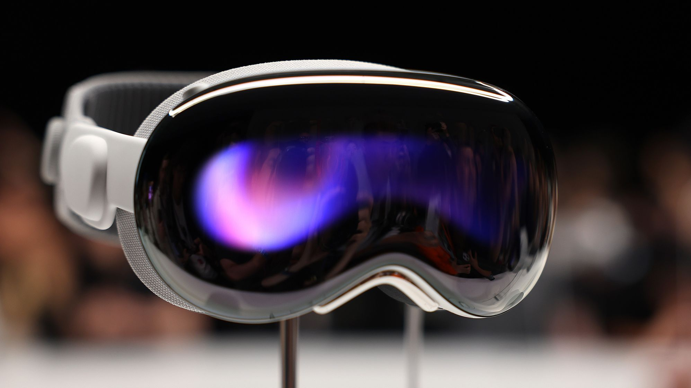
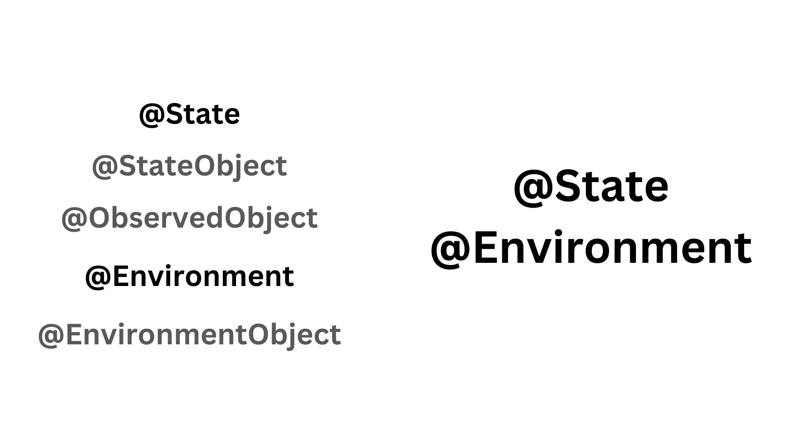
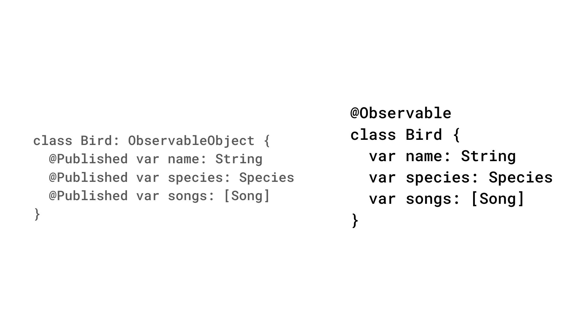
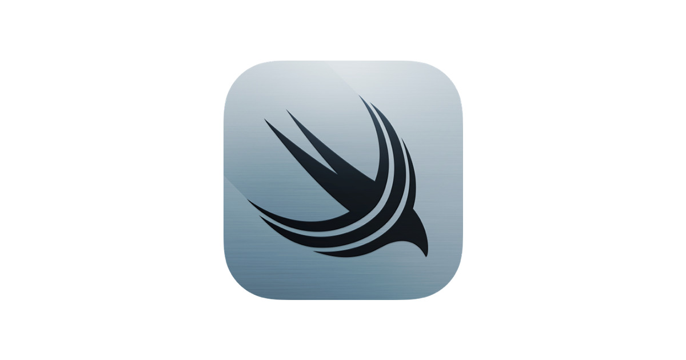

WWDC 23 Hakkında Bilmeniz Gerekenler
Alper Cem Öztürk yazdı.
Apple'ın WWDC'si geçtiğimiz günlerde gerçekleşti ve hem kullanıcılar hem de geliştiriciler için bir ton yeni özellik ve geliştirmeden bahsedildi. Hatta hepimizin yıllardır sızıntılardan takip ettiği tamamen yeni bir cihaz ve beraberinde işletim sistemi bile duyuruldu.
Bu yazıda, bir geliştiricinin bakış açısından bu yılın WWDC'sindeki favori güncellemelerimden bahsedeceğim. Bu yeniliklerle oynamak için çok fazla zamanım olmadığınından deneyimim çoğunlukla Keynote ve Platforms State of the Union sunumlarına dayandığını belirtmekte fayda var.
Vision Pro

Etkinliğin en gözdesininden ilk bahsetmek en doğrusu olur diye düşünüyorum. Vision Pro, Apple'ın on yıldan uzun süredir geliştirilmekte olduğu artırılmış ve sanal gerçeklik cihazı. Çoğu kişi tarafından bu cihaz bir headset olarak isimlendirilse de Apple bu isimlendirmeyi kullanmaktan kaçınıyor. Bunun yerine sanal dünyayı gerçek dünya ile harmanlaması nedeniyle uzamsal bilgisayar (spatial computing) olarak adlandırıyor.
Apple, artırılmış gerçeklik deneyimi için etrafınızdakileri haritalandıran ve bunu sanal öğelerle zenginleştirilmiş dijital bir görüntüye çeviren kameralar kullanıyor. Sanal gerçeklik deneyimi için ise, bu kameraları kapatıp ve etrafınızda olup bitenlerden tamamen izole edilmiş gibi görünmenizi sağlayarak, yalnızca cihazın ekranlarında görüntülenenlere odaklanmanızı sağlıyor.
Vision Pro, Apple'ın cihaz için özel olarak tasarladığı bir işletim sistemi olan visionOS'u çalıştırıyor. VisionOS, kullanıcıyı çevreleyen alanda herhangi bir yere konumlandırılabilen uygulama pencereleriyle "sonsuz bir tuval" sağlamak üzere tasarlanmış.
Apple, Vision OS için tercih edilen geliştirme ortamının SwiftUI olduğu konusunda oldukça net bir tavır sergiledi. Elbette mevcut UIKit kodunuz kullanılabilecek ancak yeni başlangıçlar için en iyi seçim SwiftUI olacaktır.
Apple, SwiftUI desteğini daha çok arttırabilmek için Button, Toggle ve TabView gibi bir uygulamanın temel yapı taşlarından, Freeform'daki 3D panolar gibi yepyeni deneyimlere kadar tüm bunları ve çok daha fazlasını SwiftUI'ın desteklemesi için ayrıca çalıştığını belirtiyor.
VisionOS için daha derinlemesine bir SwiftUI deneyimine ihtiyaç duyuyorsanız Meet SwiftUI for Spatial Computing videosuna bir göz atmanızda fayda var.
Swift Macros
Hepimizi heyecanlandıran bir diğer haber ise Swift Macros'un duyurulmasıydı. Daha önceden zaten property wrappers ve function builders gibi tool'lara sahiptik. Bu tool'lar, arka plandaki mantığı kapsüllememize ve boilerplate kod miktarını azaltmamıza olanak sağlayan özelliklerdi. Swift 5.9 ile birlikte, toolkit'e makrolar da ekleniyor. Makrolar, daha fazla esneklik sağlayarak kod yazma sürecinde daha fazla kontrol ve kolaylık sunmayı vadediyor. Bu yeni özellik, Swift geliştiricilerinin daha temiz ve okunabilir kod yazmalarına önemli bir katkı sağlayacağa benziyor.
Swift makroları diğer tool'lardan oldukça farklı bir şekilde çalışır ve size farklı imkanlar sunar. Property wrappers'dan farklı olarak, Swift makroları derleme zamanında çalıştırılır. Bu da, kodunuzu derlemeye geçirmeden önce bile çalıştırarak hataları ve uyarıları tespit edebileceğiniz anlamına gelir. Bu özelliği sayesinde, Xcode'un sağladığı uyarıları kullanarak kodunuzu daha önceden doğrulayabilir ve olası hataları önleyebilirsiniz. Bu yönüyle, Swift makroları geliştiricilere daha güvenli ve hata ayıklamaya daha uygun bir ortam sunuyor.
Swift makroları ile alakalı daha detaylı inceleme yapmak isterseniz, Expand on Swift Macros'a bir göz atmanızda fayda var.
SwiftUI Yenilikleri
Her yıl SwiftUI yenilik ve iyileştirmelerine UIKit'in yerini tamamen alabilir mi gözüyle bakıyoruz. Her ne kadar buna daha zaman var gibi dursa da, bu yılki SwiftUI yenilikleri de bir hayli göze çarpıyor.

Bu yılki SwiftUI değişiklikleri, veri akışını daha da sadeleştirmeyi hedefliyor. StateObject, @ObservedObject ve @EnvironmentObject property wrapper'ları @State ve @Environment altında toplanmış.

Ayrıca, artık nesne düzeyindeki @Observable macro sayesinde, @Published olarak parametreleri ayrı ayrı belirtmenize gerek kalmayacak.
Bir diğer büyük gelişmelerinden biri, animasyonlar için verilen desteğin arttırılmasıdır. Animasyonlar etkin bir şekilde yapıldığında, uygulamanın kalitesini arttırıyor. Günümüzde rekabetin bu kadar yüksek olduğu günlerde, kullanıcılarının uygulamaları kullanmaya devam etmesi için arayüz iyi görünmeli ve iyi hissettirmelidir. Bunun için artık keyframing ve animasyon aşamaları aracılığıyla animasyonlar üzerinde daha fazla kontrol sağlayabiliyoruz. Buna ek olarak spring modifier'ı ve animasyonlu SF symbols aracılığıyla oyun alanımız artık daha fazla genişletilmiş.
SwiftUI, artık element dönüşümlerinde ayrı aşamaları tanımlamanıza ve zaman içinde animasyonun özellikleri değiştirmek için keyframe'ler oluşturmanıza olanak tanıyor. Güncellenmiş SF symbols paketi, artık kodla tetikleyebileceğiniz önceden tanımlanmış animasyonlarla birlikte geliyor. Bu sayede, SwiftUI'de animasyonları daha kolay ve esnek bir şekilde kontrol edebileceğiz.
Sonuç olarak, SwiftUI'ın popülerleşmesiyle birlikte, animasyon ve kullanıcı arayüzü tasarımı alanında daha fazla destek sunulmaya başlandı. Böylece, geliştiriciler uygulama kullanıcı deneyimini geliştirmek için daha fazla seçenek ve esnekliğe sahip olabilir. SwiftUI'nin bu güncellemeleri, geliştiricilerin iOS ve macOS uygulamalarında daha güçlü ve etkileyici kullanıcı arayüzleri oluşturmasına yardımcı olacağa benziyor.
SwiftUI yeniliklerine daha yakından göz atmak isterseniz What's new in SwiftUI videosunun bu konuda yardımı dokunabilir.
SwiftData

Core Data ile tanışanlar, onun öğrenilmesi ve kullanılması en kolay framework olmadığını bilirler. Core Data genellikle string literal'e dayanır. Derleme zamanı doğrulamasından yoksundur ve potansiyel yazım hatalarına yer bırakır. Bu durumda eğer bir hata yaparsanız, sadece uygulamanız çöktüğünde bu hatayı öğrenebilirsiniz.
SwiftData, Core Data'ya alternatif olarak Swift ile oluşturulmuş ve Swift için tasarlanmış bir veritabanı çözümüdür. Bu, Swift'in kendisiyle uyumlu olan aynı prensipleri takip ettiği anlamına gelir. SwiftData hızlı, modern ve güvenlidir. Zaten aşina olduğunuz teknolojilere dayanmaktadır. SwiftData, modeller için ayrı dosyalar kullanmadığından, aynı veri yapılarını iki kez tanımlamanız gerekmez.
Apple, SwiftData'nın SwiftUI göz önünde bulundurularak tasarlandığını ve Core Data entegrasyonunun oldukça kolay olduğunu belirtiyor. Bunun yanı sıra Core Data ile aynı şekilde, SwiftData'nında undo ve redo gibi yaygın senaryoları desteklediğini söylemekte fayda var.
SwiftData'nın en önemli dezavantajlarından biri, yalnızca yeni işletim sistemi sürümlerinde mevcut olmasıdır. Bu nedenle, eski sürümleri desteklemeyi bırakmanız veya birkaç yıl beklemeniz gerekebilir, ancak bu kararın birçok kullanıcıyı etkileyeceğini bilerek hareket etmek en doğrusu olacaktır.
SwiftData ile ilgili daha derinlemesine bilgi sahibi olmak için Meet SwiftData videosuna göz atmak isteyebilirsiniz.
WWDC 23, Apple'ın teknoloji ve tasarım yaklaşımının sınırlarını genişletmeye devam ettiğini gösterdi. Vision Pro, SwiftUI'nin gelişmiş yetenekleri ve SwiftData gibi yenilikler, hem geliştiriciler hem de kullanıcılar için çığır açan değişiklikler getirecek gibi görünüyor. Her yıl olduğu gibi, Apple'ın sunduğu yenilikler, geliştiricilerin araçları ve teknolojileri kullanma şekillerini dönüştürecek. Bu da, kullanıcıların ürün ve hizmetleri deneyimlemelerinde yeni ve heyecan verici değişikliklere yol açmaya devam edecek.
Bu sayıda WWDC23 'ün önemli gelişmelerini sizlerle paylaştım. Umarım faydalı olmuştur. Sonraki sayıya kadar görüşmek üzere!